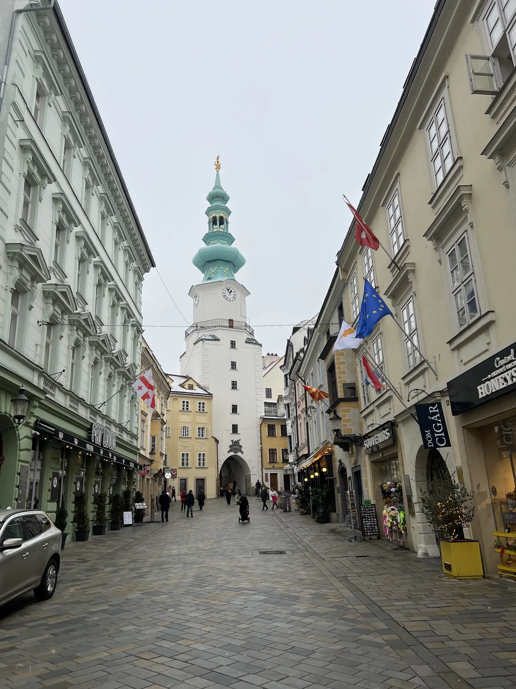
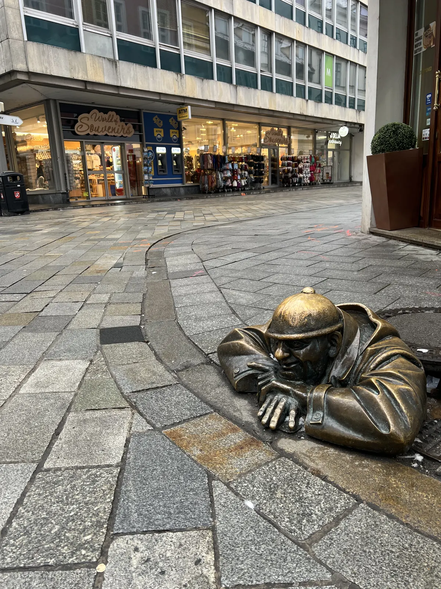
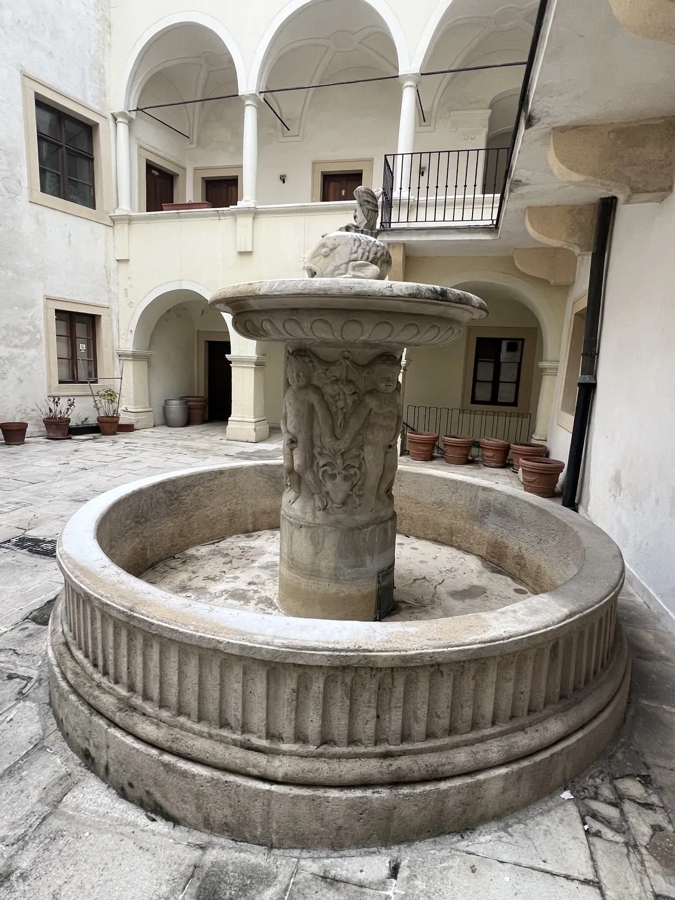
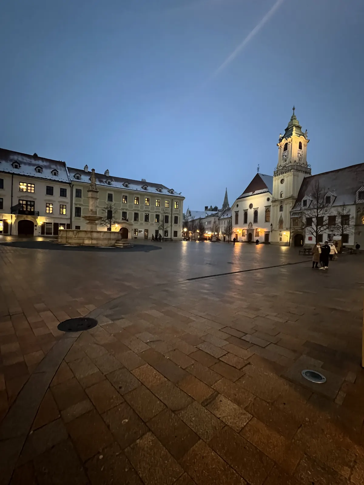
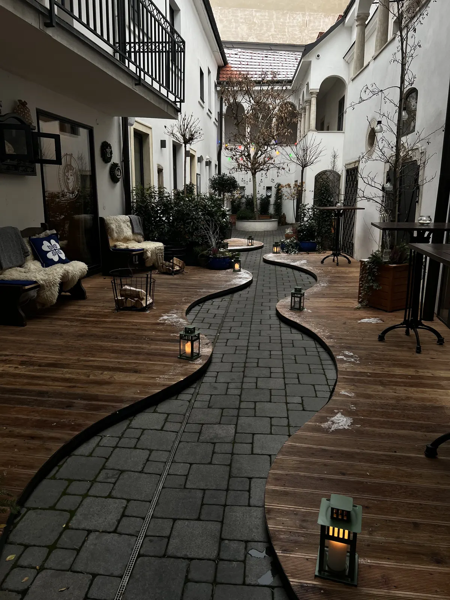

🇸🇰 Bratislava Guide: 10 places – UFO deck, old town, castle, Blue Church & Devín

Table of contents
Most people pass Bratislava between Vienna and Budapest. Prices and times are guidelines (2026).
🗺️ Map: all 7 places
My story in Bratislava
I was there – and Bratislava is small, relaxed and wonderfully quirky. My tip: Bratislava combines perfectly with Vienna – the two capitals are only about an hour apart. In the evening go up to the UFO deck on the SNP bridge for sunset.
This guide contains affiliate links (GetYourGuide, Omio). If you book through them I earn a small commission – you never pay a cent more. Prices and opening hours change – double-check before you go.
🆓 Free things to do
5 places in Bratislava you can enjoy without an entry fee or completely free (for some, only a part costs extra, e.g. a tower or museum):
At a glance
Getting there and around
From Vienna it takes about an hour by train or bus to Bratislava; check current timetables beforehand.
From Vienna the train takes about an hour to Bratislava; alternatives are bus or river boat on the Danube (check timetables beforehand). The old town is about a 10 to 15 minute walk from the main station (Hlavná stanica) or reachable by tram. The currency is the euro.
The old town is small and easy to explore on foot. For Slavín, Devín and the Blue Church you need bus or tram.
1. Must-sees
UFO deck on the SNP bridge
In the evening for sunset. Admission is about €12.50, and you get a 360° view.
The UFO sits like a flying saucer on the pylon of the SNP Bridge, about 95 metres above the Danube. The viewing platform offers a 360-degree view of old town, castle, Danube and prefabricated housing districts. In the restaurant and bar you can eat and drink; an evening visit at sunset is especially beautiful.
Admission is charged; check prices and times beforehand. The lift runs in the pylon – allow waiting time at peak hours.
Tip: Come at sunset and have a drink at the bar.
Bratislava Castle🆓 Free to experience
Wide view over the Danube and city. Grounds and gardens are free to enter.
Bratislava Castle sits on a hill above the Danube and looks like an upturned table with four towers. For centuries the castle hill was the seat of kings; inside is the Historical Museum. The gardens and terraces are freely accessible and offer views of the Danube, old town and hills.
The ascent from the old town takes about 15 minutes on foot. It is most beautiful in the late afternoon. Check opening times and admission for the museum beforehand.
Tip: Go up in the late afternoon and stay until sunset.
Old town & Čumil🆓 Free to experience
The old town can be walked in an hour – full of bronze figures, above all Čumil, the worker peeking out of a manhole.
The old town is small and full of bronze figures: Čumil, the “Watcher”, is a worker peeking out of a manhole; next to him stand the Napoleonic soldier on a bench, the “Schöne Náci” and the paparazzo on a corner. The statues are funny and turn the walk into a treasure hunt.
Around the main square with the Old Town Hall and the Maximilian Fountain you find cafés and restaurants. Plan one to two hours and then eat a portion of bryndzové halušky.
Tip: Find all the figures and take a photo with Čumil.


Michael’s Gate & Main Square🆓 Free to experience
Michael’s Gate is the only surviving city gate of the medieval fortifications; its tower carries a Baroque spire and a statue of the archangel Michael. You can climb it and get a beautiful view over the old town. From here Michalská Street leads to the Main Square.
The Main Square (Hlavné námestie) is the centre: Old Town Hall, Maximilian Fountain, terraces and in Advent the Christmas market.
Tip: Climb the tower and then go to the Main Square.


St Martin’s Cathedral
The Gothic St Martin’s Cathedral was for centuries the coronation church of the Hungarian kings: between 1563 and 1830 kings and queens were crowned here. On the tower sits a golden crown on a cushion. Inside you see Gothic vaults and altars.
Right next to the cathedral runs the road on the Danube bank. Check opening times beforehand as they vary.
Tip: Look at the golden crown on the tower.
Blue Church (Church of St Elizabeth)💎 Hidden gem🆓 Free to experience
The Blue Church is an Art Nouveau fairytale: façade, roof and towers are in sky blue and white, with mosaics and ornaments. It was designed in the early 20th century by the architect Ödön Lechner. The interior is small and lovingly designed.
The church lies slightly away from the old town but is reachable on foot. It is not always open – check times beforehand.
Tip: Come in the morning and check the opening times.
2. Hidden gem
The Radio Building (inverted pyramid)💎 Hidden gem
The radio building shaped like an inverted pyramid regularly lands on lists of the world’s ugliest buildings.
The building of Slovak Radio, completed in 1983, has the shape of an inverted pyramid and is a striking example of brutalism. It counts among photographers and architecture fans as a curiosity and likes to appear on lists of the “ugliest buildings”; a short detour is worthwhile if you like architecture.
You can look at it from outside at any time; an interior visit is not usual.
Slavín – memorial with a view💎 Hidden gem🆓 Free to experience
On a hill north of the castle lies Slavín, a war memorial for fallen Soviet soldiers of the Second World War. The climb is worthwhile for the view of the Danube, old town and the city, especially at sunset.
The place is quiet, the site well kept. You reach it on foot or by bus; plan one to two hours.
Tip: Go up at sunset.
Devín Castle ruins💎 Hidden gem
About nine kilometres west lies Devín Castle ruin at the confluence of the Danube and the March, where the border between the Roman Empire and barbarian land once ran. The castle stands on a rock overlooking two rivers; towers and walls are walkable.
You reach it by bus (check timetable beforehand). Plan half a day and take water. A good trip if you want to combine nature and history.
Tip: Take the bus and plan half a day.
Bryndzové halušky & Slovak cuisine
The national dish bryndzové halušky are small potato dumplings with salty sheep cheese (bryndza) and crispy bacon. Kofola (the Slovak cola) or a local beer goes with it. For dessert try poppy-seed strudel or sweet pancakes.
Traditional places in the old town serve the classics at moderate prices; ask about daily menus, which are often cheaper. Prices change, ask beforehand.
Tip: Try the halušky in a traditional place.
What makes Bratislava special
Bratislava is the only capital in the world bordering two countries: Austria and Hungary. As Pressburg it was the coronation city of the Hungarian kings for nearly 300 years (1563–1830, including Maria Theresa). Since 1993 it has been Slovakia’s capital.
📍 Save this guide to Google Maps
1. Quick: open as a route
2. Permanent: as your own map (2 minutes)
- Download the file with all pins (KML button below).
- Open Google My Maps → “Create a new map” → “Import” → choose the file.
- Done – every place sits exactly where it should, with number, tip and a link back to the guide.
- In the Google Maps app the map appears under “Saved” → “Maps”, also on the go.
⬇️ All pins for Google Maps (KML) ⬇️ Download place list (CSV)
3. Save one by one
Your plan
Day 1: A day in Bratislava
- Morning – Michael’s Gate, Main Square, Čumil and figures
- Midday – bryndzové halušky
- Afternoon – St Martin’s Cathedral, castle, Blue Church
- Evening – UFO deck at sunset
FAQ
Can I combine Bratislava with Vienna?
Yes, only about an hour’s ride.
How many days do you need in Bratislava?
Do I pay in euros?
🗺️ All places on my map → More guides and reels on Instagram: @hiddengem.atlas
Share this guide: On WhatsApp